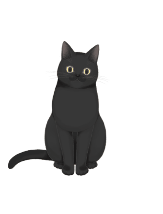
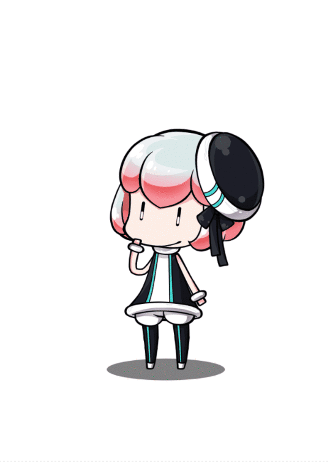

从不浪费时间的人，没有工夫抱怨时间不够。
又在踩了无数次坑后，将我的小看板娘配置好了，在这里我会详细的介绍如何配置 Live 2D 看板娘 与我踩过的那些坑。
那么，现在开始配置属于你自己的 Live 2D 看板娘 吧！（多图警告！）
设置你喜欢的 Live 2D 看板娘
普通版本
之前在我的 这篇博客 中有提到使用 这个项目 来制作个性化的看板娘，其中一个样式如下：

可爱的 SHIZUKU
切换至 Hexo 根目录下，在终端中输入以下代码：
1 | $ npm install -save hexo-helper-live2d |
编辑 ：（具体配置见 官方文档）
1 | live2d: |
所有的 Live 2D MODELS
我尝试配置了一些 并且做了截图，各位大佬们不用一个个的去试了：

ChiToSe |

Epsilon2.1 |

Gantzert_Felixander |

HaRu |

HaRuTo |

HiBiKi |
|

HiJiKi |
IZuMi |
KoHaRu |

MiKu |

NiCo |

Nietzche |

NI-J |

Nipsilon |

Nito |
|
ShiZuKu |

ToRoRo |

TsuMiKi |
|
Unitychan |

wanko |

Z16 |
（是不是还是感觉 ShiZuKu 还是最好看呢2333…）
进阶版本
什么？你想要一个 、、、的看板娘？
呵~
感谢 张书樵大神 的 Live2D项目，让你可以实现你的愿望。
首先，clone 项目到你的本地（或你的 Hexo 根目录下）：
1 | git clone https://github.com/stevenjoezhang/live2d-widget |
如果你是在你的
Hexo下配置的，请将项目文件解压至你的Hexo根目录/source/live2d-widget/下（没有live2d-widget请手动创建）
如果你想自定义你的看板娘 或者 的话，首先修改 目录下的 文件，将：
1 | const live2d_path = "https://cdn.jsdelivr.net/gh/stevenjoezhang/live2d-widget/"; |
改为：
1 | // const live2d_path = "https://cdn.jsdelivr.net/gh/stevenjoezhang/live2d-widget/"; |
随后，在 你的Hexo根目录/themes/next/layout/_layout.swing 中，</body> 之前，增加以下内容：
1 | <script src="/live2d-widget/autoload.js"></script> |
在 </head> 之前，增加以下内容：
1 | <link rel="stylesheet" href="https://cdn.jsdelivr.net/npm/font-awesome/css/font-awesome.min.css"> |
在你的 中，新增以下内容：
1 | live2d: |
如果你已经使用了
普通版本的Live 2D，请将其他无关属性注释掉！
如果你想自定义看板娘大小、位置或者其他样式，请修改
如果你想自定义看板娘言语互动，请修改 和
高级版本中我所踩的那些坑
jQuery加载失败
时刻注意着你的 Console，如果出现了找不到符号 $，因为首先加载的 ，里面第一个干的事情就是通过 Ajax 去请求 与 ，所以要保证你已经导入了 jQuery 库，如果没有的话请在 你的Hexo根目录/themes/next/layout/_layout.swing 中，</head> 标签前，手动导入 jQuery。
loadlive2d方法未定义
在你的 文件中，将加载 那一段的 URL 请求改为：
1 | // 上面省略 |
CROS跨域请求失败
因为 人尽皆知 的原因，在 中第 162 行向目标发起了一个 getJSON 请求你的目标文件 ，这里会出现问题，需要你去设置跨域请求头。
我是用的 Nginx 来部署博客的，所以就用 Nginx 举例：
在你的 Nginx 网站配置文件中，在你的服务里面，添加如下代码：
1 | add_header 'Access-Control-Allow-Origin' '*'; |
然后重启你的 Nginx 服务即可解决。
奇奇怪怪的问题
使用 hexo g 后，在你的 /public/ 文件夹中会生成一个 /live2d-widget/ 文件，其中 会有一些莫名其妙的问题，你需要将你的 Hexo/source/live2d-widget/waifu-tips.js 复制粘贴覆盖掉 public 目录下那个有问题的文件中的内容。同理， 也会有一些奇奇怪怪的问题，也需要你手动的去覆盖一次。
P.S.觉得麻烦的可以写一个 bash 脚本，代码大致如下：
1 |
|
然后就可以一键生成辽~